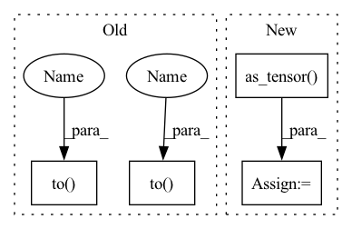

Pattern ID :24521
Before Change
edge_index, edge_weight = from_scipy_sparse_matrix(sp.csr_matrix(adj_matrix))
data.V, data.U = V.to(device), U.to(device)
data.edge_index, data.edge_weight = edge_index.to(device ) , edge_weight.to(device )
return data
def __repr__(self) -> str:
return f"{self.__class__.__name__}(K={self.K})"After Change
data.V, data.U = V.to(device), U.to(device)
// edge_index, edge_weight = from_scipy_sparse_matrix(adj_matrix)
// data.edge_index, data.edge_weight = edge_index.to(device), edge_weight.to(device)
data.adj_t = torch.as_tensor( adj_matrix, dtype=torch.float, device=device)
del data.edge_index, data.edge_weight
return data
def __repr__(self) -> str:In pattern: SUPERPATTERN
Frequency: 4
Non-data size: 4
Instances Fragment ID: 76238527
Project Name: edisonleeeee/graphwar
Commit Name: 9c4006bb8370bd7e5503fce8b583ae164354dd7a
Time: 2022-05-31
Author: cnljt@outlook.com
File Name: graphwar/defense/purification.py
M Class Name: Eigendecomposition
N Class Name: Eigendecomposition
M Method Name: __call__(3)
N Method Name: __call__(3)
M Parent Class: BaseTransform
N Parent Class: BaseTransform
M File Name: graphwar/defense/purification.py
N File Name: graphwar/defense/purification.py
M Start Line: 117
M End Line: 136
N Start Line: 117
N End Line: 137
Before Change
bin_pred: ndarray,
the array (with values 0, 1 for each class) of binary prediction
_device = next(self.parameters()).device
if isinstance(input, np.ndarray):
_input = torch.from_numpy(input).to( _device)
else:
_input = input.to( _device)
pred = self.forward(_input)
pred = self.sigmoid(pred)
bin_pred = (pred>=bin_pred_thr).int()
pred = pred.cpu().detach().numpy()After Change
self.eval()
_device = next(self.parameters()).device
_dtype = next(self.parameters()).dtype
_input = torch.as_tensor( input, dtype=_dtype, device=_device)
if _input.ndim == 2:
_input = _input.unsqueeze(0) // add a batch dimension
pred = self.forward(_input)
pred = self.sigmoid(pred) Fragment ID: 76238526
Project Name: deeppsp/torch_ecg
Commit Name: a9fb65d4abae9cfa6e51ff1425979881a154b22d
Time: 2021-10-12
Author: wenh06@gmail.com
File Name: benchmarks/train_crnn_cpsc2020/model.py
M Class Name: ECG_CRNN_CPSC2020
N Class Name: ECG_CRNN_CPSC2020
M Method Name: inference(4)
N Method Name: inference(4)
M Parent Class: ECG_CRNN
N Parent Class: ECG_CRNN
M File Name: benchmarks/train_crnn_cpsc2020/model.py
N File Name: benchmarks/train_crnn_cpsc2020/model.py
M Start Line: 75
M End Line: 80
N Start Line: 75
N End Line: 81
Before Change
PVC_indices: list,
list of predicted indices of PVC
_device = next(self.parameters()).device
batch_size, channels, seq_len = input.shape
if isinstance(input, np.ndarray):
_input = torch.from_numpy(input).to( _device)
else:
_input = input.to( _device)
pred = self.forward(_input)
if self.n_classes == 2:
pred = self.sigmoid(pred) // (batch_size, seq_len, 2)
bin_pred = (pred>=bin_pred_thr).int()After Change
self.eval()
_device = next(self.parameters()).device
_dtype = next(self.parameters()).dtype
_input = torch.as_tensor( input, dtype=_dtype, device=_device)
if _input.ndim == 2:
_input = _input.unsqueeze(0) // add a batch dimension
batch_size, channels, seq_len = _input.shape
pred = self.forward(_input) Fragment ID: 76238531
Project Name: deeppsp/torch_ecg
Commit Name: a9fb65d4abae9cfa6e51ff1425979881a154b22d
Time: 2021-10-12
Author: wenh06@gmail.com
File Name: benchmarks/train_crnn_cpsc2020/model.py
M Class Name: ECG_SEQ_LAB_NET_CPSC2020
N Class Name: ECG_SEQ_LAB_NET_CPSC2020
M Method Name: inference(4)
N Method Name: inference(4)
M Parent Class: ECG_SEQ_LAB_NET
N Parent Class: ECG_SEQ_LAB_NET
M File Name: benchmarks/train_crnn_cpsc2020/model.py
N File Name: benchmarks/train_crnn_cpsc2020/model.py
M Start Line: 167
M End Line: 173
N Start Line: 165
N End Line: 171
Before Change
if not inplace:
data = copy(data)
device = data.edge_index.device
adj_matrix = to_scipy_sparse_matrix(data.edge_index, data.edge_weight,
num_nodes=data.num_nodes).tocsr()
if self.normalize:
adj_matrix = scipy_normalize(adj_matrix)
V, U = sp.linalg.eigsh(adj_matrix, k=self.K)
adj_matrix = (U * V) @ U.T
adj_matrix[adj_matrix < 0] = 0.
V = torch.as_tensor(V, dtype=torch.float)
U = torch.as_tensor(U, dtype=torch.float)
edge_index, edge_weight = from_scipy_sparse_matrix(sp.csr_matrix(adj_matrix))
data.V, data.U = V.to(device), U.to(device)
data.edge_index, data.edge_weight = edge_index.to( device) , edge_weight.to( device)
return data
def __repr__(self) -> str:
return f"{self.__class__.__name__}(K={self.K})"After Change
data.V, data.U = V.to(device), U.to(device)
// edge_index, edge_weight = from_scipy_sparse_matrix(adj_matrix)
// data.edge_index, data.edge_weight = edge_index.to(device), edge_weight.to(device)
data.adj_t = torch.as_tensor( adj_matrix, dtype=torch.float, device=device)
del data.edge_index, data.edge_weight
return data
def __repr__(self) -> str: Fragment ID: 76238530
Project Name: edisonleeeee/greatx
Commit Name: 9c4006bb8370bd7e5503fce8b583ae164354dd7a
Time: 2022-05-31
Author: cnljt@outlook.com
File Name: graphwar/defense/purification.py
M Class Name: Eigendecomposition
N Class Name: Eigendecomposition
M Method Name: __call__(3)
N Method Name: __call__(3)
M Parent Class: BaseTransform
N Parent Class: BaseTransform
M File Name: graphwar/defense/purification.py
N File Name: graphwar/defense/purification.py
M Start Line: 117
M End Line: 136
N Start Line: 117
N End Line: 137